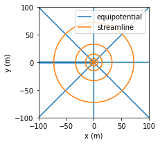

Steady two-dimensional flow to wells
Contents

The Python code provided below is from
Analytical Groundwater Modeling: Theory and Applications Using Python
by Mark Bakker and Vincent Post
ISBN 9781138029392
The book is published by CRC press and is available here.
This Notebook is provided under the MIT license.
© 2022 Mark Bakker and Vincent Post
Steady two-dimensional flow to wells#
%matplotlib inline
import numpy as np
import matplotlib.pyplot as plt
plt.rcParams["figure.figsize"] = (8, 3) # set default figure size
plt.rcParams["contour.negative_linestyle"] = 'solid' # set default line style
plt.rcParams["figure.autolayout"] = True # same at tight_layout after every plot
---------------------------------------------------------------------------
ModuleNotFoundError Traceback (most recent call last)
Input In [1], in <cell line: 1>()
----> 1 get_ipython().run_line_magic('matplotlib', 'inline')
2 import numpy as np
3 import matplotlib.pyplot as plt
File ~/anaconda3/envs/jb/lib/python3.10/site-packages/IPython/core/interactiveshell.py:2305, in InteractiveShell.run_line_magic(self, magic_name, line, _stack_depth)
2303 kwargs['local_ns'] = self.get_local_scope(stack_depth)
2304 with self.builtin_trap:
-> 2305 result = fn(*args, **kwargs)
2306 return result
File ~/anaconda3/envs/jb/lib/python3.10/site-packages/IPython/core/magics/pylab.py:99, in PylabMagics.matplotlib(self, line)
97 print("Available matplotlib backends: %s" % backends_list)
98 else:
---> 99 gui, backend = self.shell.enable_matplotlib(args.gui.lower() if isinstance(args.gui, str) else args.gui)
100 self._show_matplotlib_backend(args.gui, backend)
File ~/anaconda3/envs/jb/lib/python3.10/site-packages/IPython/core/interactiveshell.py:3478, in InteractiveShell.enable_matplotlib(self, gui)
3457 def enable_matplotlib(self, gui=None):
3458 """Enable interactive matplotlib and inline figure support.
3459
3460 This takes the following steps:
(...)
3476 display figures inline.
3477 """
-> 3478 from matplotlib_inline.backend_inline import configure_inline_support
3480 from IPython.core import pylabtools as pt
3481 gui, backend = pt.find_gui_and_backend(gui, self.pylab_gui_select)
File ~/anaconda3/envs/jb/lib/python3.10/site-packages/matplotlib_inline/backend_inline.py:6, in <module>
1 """A matplotlib backend for publishing figures via display_data"""
3 # Copyright (c) IPython Development Team.
4 # Distributed under the terms of the BSD 3-Clause License.
----> 6 import matplotlib
7 from matplotlib.backends.backend_agg import ( # noqa
8 new_figure_manager,
9 FigureCanvasAgg,
10 new_figure_manager_given_figure,
11 )
12 from matplotlib import colors
ModuleNotFoundError: No module named 'matplotlib'
Radially symmetric flow on a circular island#
# parameters
k = 5 # hydraulic conductivity, m/d
zb = 0 # bottom elevation of aquifer, m
N = 0.001 # areal recharge, m/d
R = 200 # radius of the island, m
hR = 10 # head at edge of island, m
rw = 0.3 # well radius, m
Qhalf = 0.5 * N * np.pi * R ** 2 # discharge is half total recharge, m^3/d
Qtotal = N * np.pi * R ** 2 # discharge equals total recharge, m^3/d
# solution
r = np.linspace(rw, R, 400)
PhiR = 0.5 * k * (hR - zb) ** 2
Phi2 = -0.25 * N * (r ** 2 - R ** 2) + PhiR
Phi3 = Phi2 + Qhalf / (2 * np.pi) * np.log(r / R)
hhalf = zb + np.sqrt(2 * Phi3 / k)
Phi3 = Phi2 + Qtotal / (2 * np.pi) * np.log(r / R)
htotal = zb + np.sqrt(2 * Phi3 / k)
# basic plot head for half total discharge
plt.plot(-r, hhalf, 'C0', label='Q = half total recharge')
plt.plot(r, hhalf, 'C0')
plt.xticks(np.arange(-200, 201, 50), np.abs(np.arange(-200, 201, 50)))
plt.xlabel('radial distance (m)')
plt.ylabel('head (m)')
plt.grid()
plt.legend();
Wells near rivers and impermeable boundaries#
# parameters
xw = 0 # x-location of well, m
yw = 0 # y-location of well, m
Q = 100 # discharge of well, m^3/d
# solution
xg, yg = np.meshgrid(np.linspace(-100, 100, 100), np.linspace(-100, 100, 100))
phi = Q / (4 * np.pi) * np.log(((xg - xw) ** 2 + (yg - yw) ** 2) / 100 ** 2)
psi = Q / (2 * np.pi) * np.arctan2(yg - yw, xg - xw)
# basic flow net (right graph)
plt.subplot(111, aspect=1)
cs1 = plt.contour(xg, yg, psi, np.arange(-Q / 2, Q / 2, Q / 8), colors='C0')
cs2 = plt.contour(xg, yg, phi, np.arange(phi.min(), phi.max(), Q / 8), colors='C1')
cs1.collections[0].set_label('equipotential')
cs2.collections[0].set_label('streamline')
plt.xlabel('x (m)')
plt.ylabel('y (m)')
plt.legend();

# parameters
T = 100 # transmissivity, m^2/d
hc = 0 # head at (0, 0)
d = 100 # half distance between the two wells, m
Q = [100, -100] # discharges of wells, m^3/d
xw = [-d, d] # x-locations of wells, m
yw = [0, 0] # y-locations of wells, m
phic = T * hc # discharge potential at origin, m^3/d
# solution
xg, yg = np.meshgrid(np.linspace(-200, 200, 100), np.linspace(-150, 150, 100))
pot = phic
psi = 0.0
Qx = 0.0
Qy = 0.0
for n in range(2):
rsq = (xg - xw[n]) ** 2 + (yg - yw[n]) ** 2
pot += Q[n] / (4 * np.pi) * np.log(rsq)
psi += Q[n] / (2 * np.pi) * np.arctan2(yg - yw[n], xg - xw[n])
Qx += -Q[n] / (2 * np.pi) * (xg - xw[n]) / rsq
Qy += -Q[n] / (2 * np.pi) * (yg - yw[n]) / rsq
# basic plot
plt.figure(figsize=(8, 4))
plt.subplot(121, aspect=1)
plt.contour(xg, yg, pot, np.arange(phic - 100, phic + 100, 10), colors='C0')
plt.contour(xg, yg, psi, np.arange(-Q[0], Q[0], 10), colors='C1')
plt.xlabel('x (m)')
plt.ylabel('y (m)')
plt.subplot(122, aspect=1)
plt.streamplot(xg, yg, Qx, Qy, color='C1', density=0.7)
plt.xlabel('x (m)')
plt.ylabel('y (m)');
# changed parameters
Q = [100, 100] # discharge of well and image well, m^3/d
# solution
pot = 0.0
psi = 0.0
Qx = 0.0
Qy = 0.0
for n in range(2):
rsq = (xg - xw[n]) ** 2 + (yg - yw[n]) ** 2
pot += Q[n] / (4 * np.pi) * np.log(rsq) + phic
psi += Q[n] / (2 * np.pi) * np.arctan2(yg - yw[n], xg - xw[n])
Qx += -Q[n] / (2 * np.pi) * (xg - xw[n]) / rsq
Qy += -Q[n] / (2 * np.pi) * (yg - yw[n]) / rsq
# basic plot
plt.figure(figsize=(8, 4))
plt.subplot(121, aspect=1)
plt.contour(xg, yg, pot, 20, colors='C0')
plt.contour(xg, yg, psi, 20, colors='C1')
plt.xlabel('x (m)')
plt.ylabel('y (m)')
plt.subplot(122, aspect=1)
plt.streamplot(xg, yg, Qx, Qy, color='C1', density=0.7)
plt.xlabel('x (m)')
plt.ylabel('y (m)');

# parameters
xw = [-100, 100, -100, 100] # x-locations of well and image wells, m
yw = [-50, -50, 50, 50] # y-locations of well and image wells, m
Qw = [100, 100, -100, -100] # discharge of well and image wells, m^3/d
# solution
xg, yg = np.meshgrid(np.linspace(-200, 0, 101), np.linspace(-150, 0, 101))
phi = 0
psi = 0
for n in range(4):
phi += Qw[n] / (4 * np.pi) * np.log((xg - xw[n]) ** 2 + (yg - yw[n]) ** 2)
psi += Qw[n] / (2 * np.pi) * np.arctan2(yg - yw[n], xg - xw[n])
# flow net in right graph
plt.subplot(111, aspect=1)
plt.contour(xg, yg, phi, np.arange(-100, 100, 5), colors='C0')
plt.contour(xg, yg, psi, np.arange(-200, 200, 5), colors='C1')
plt.text(-100, 2, 'specified head', color='C0', ha='center')
plt.text(2, -75, 'impermeable', color='C1', rotation=90, va='center')
plt.xlabel('x (m)')
plt.ylabel('y (m)');
Wells near an inhomogeneity boundary#
# parameters
d = 100 # distance of well from inhomogeneity boundary, m
Q = 100 # discharge of well, m^3/d
TL = 100 # transmissivity on left side, m^2/d
# solution
def head_and_psi(x, y, TL, TR, d=100, Q=100):
r0 = np.sqrt((x + d) ** 2 + y ** 2)
r1 = np.sqrt((x - d) ** 2 + y ** 2)
theta0 = np.arctan2(y, x + d)
theta1 = np.arctan2(-y, d - x)
if x < 0:
h = Q / (2 * np.pi * TL) * np.log(r0 / r1) + \
Q / (np.pi * (TL + TR)) * np.log(r1)
psi = Q / (2 * np.pi) * (theta0 - theta1) + \
Q * TL / (np.pi * (TL + TR)) * theta1
else:
h = Q / (np.pi * (TL + TR)) * np.log(r0)
psi = Q * TR / (np.pi * (TL + TR)) * theta0
return h, psi
hpsifunc = np.vectorize(head_and_psi)
xg, yg = np.meshgrid(np.linspace(-200, 200, 100), np.linspace(-150, 150, 100))
ha, psia = hpsifunc(xg, yg, TL=TL, TR=TL / 5, d=d, Q=Q)
hb, psib = hpsifunc(xg, yg, TL=TL, TR=5 * TL, d=d, Q=Q)
# basic plot
plt.subplot(121, aspect=1, title='$T_L$=100 m$^2$/d, $T_R$=20 m$^2$/d')
plt.contour(xg, yg, ha, 40, colors='C0')
plt.contour(xg, yg, psia, np.arange(-50, 50, 2.5), colors='C1')
plt.fill([0, 200, 200, 0], [-150, -150, 150, 150], fc=[.9, .9, .9])
plt.xlabel('x (m)')
plt.ylabel('y (m)')
plt.subplot(122, aspect=1, title='$T_L$=100 m$^2$/d, $T_R$=500 m$^2$/d')
plt.contour(xg, yg, hb, 40, colors='C0')
plt.contour(xg, yg, psib, np.arange(-50, 50, 2.5), colors='C1')
plt.fill([0, 200, 200, 0], [-150, -150, 150, 150], fc=[.9, .9, .9])
plt.xlabel('x (m)')
plt.ylabel('y (m)');
Wells in a semi-confined aquifer#
# parameters
T = 200 # transmissivity of bottom aquifer, m^2/d
c = 1000 # resistance of leaky layer, d
hstar = 0 # fixed head in top aquifer, m
rw = 0.3 # radius of the well, m
lab = np.sqrt(T * c) # leakage factor, m
Q = 500 # discharge of well, m^3/d
# solution
from scipy.special import k0, k1
r = np.linspace(rw, 4 * lab, 200)
h = -Q / (2 * np.pi * T) * k0(r / lab) + hstar
happrox = Q / (2 * np.pi * T) * np.log(r / (1.123 * lab)) + hstar
Qtot = 2 * np.pi * r * Q / (2 * np.pi * lab) * k1(r / lab)
# basic plot
plt.subplot(121)
plt.plot(r / lab, h, label='head')
plt.plot(r / lab, happrox, label='approx')
plt.xlabel('$r/\lambda$')
plt.ylabel('head (m)')
plt.grid()
plt.legend()
plt.subplot(122)
plt.plot(r / lab, Qtot / Q)
plt.xlabel('$r/\lambda$')
plt.ylabel('$Q_{tot}/Q$')
plt.grid();
Wells in a two-aquifer system#

# parameters
T0 = 100 # transmissivity aquifer 0, m^2/d
T1 = 150 # transmissivity aquifer 1, m^2/d
c = 1000 # resistance of leaky layer, d
zaq = [0, -10, -15, -25] # elevation of top of layers and bottom, m
R = 200 # distance where head is fixed, m
hR = 5 # head at r=R, m
Q = 1000 # discharge of well, m^3/d
rw = 0.3 # radius of well, m
lab = np.sqrt(c * T0 * T1 / (T0 + T1)) # leakage factor, m
# solution
from scipy.special import k0, k1
r = np.linspace(rw, 5 * lab, 200)
h0 = Q / (2 * np.pi * (T0 + T1)) * (np.log(r / R) + \
k0(r / lab) - k0(R / lab)) + hR
h1 = Q / (2 * np.pi * (T0 + T1)) * (np.log(r / R) + \
T0 * k0(r / lab) / T1 - k0(R / lab)) + hR
Q0tot = -Q * T0 / (2 * np.pi * (T0 + T1)) * (1 / r -
k1(r / lab) / lab) * 2 * np.pi * r
Q1tot = -Q * T1 / (2 * np.pi * (T0 + T1)) * (1 / r +
T0 * k1(r / lab) / (T1 * lab)) * 2 * np.pi * r
psi = np.zeros((len(zaq), len(r)))
psi[1] = Q0tot
psi[2] = Q0tot
psi[3] = Q1tot + Q0tot
# basic plot head and flow
plt.subplot(121)
plt.plot(r / lab, h0, label='aquifer 0')
plt.plot(r / lab, h1, label='aquifer 1')
plt.xlabel('$r/\lambda$')
plt.ylabel('head (m)')
plt.grid()
plt.legend()
plt.subplot(122)
plt.plot(r / lab, Q0tot / Q, label='aquifer 0')
plt.plot(r / lab, Q1tot / Q, label='aquifer 1')
plt.xlabel('$r$ (m)')
plt.ylabel('$Q_{tot} / Q$')
plt.grid()
plt.legend();

plt.subplot(aspect=20)
plt.contour(r, zaq, psi, 10, colors='C1')
plt.contour(-r, zaq, psi, 10, colors='C1')
plt.fill([-r[-1], r[-1], r[-1], -r[-1]], [-15, -15, -10, -10], color=[.9, .9, .9])
plt.plot([0, 0], [-25, -15], 'k--')
plt.xlabel('x (m)')
plt.ylabel('z (m)');